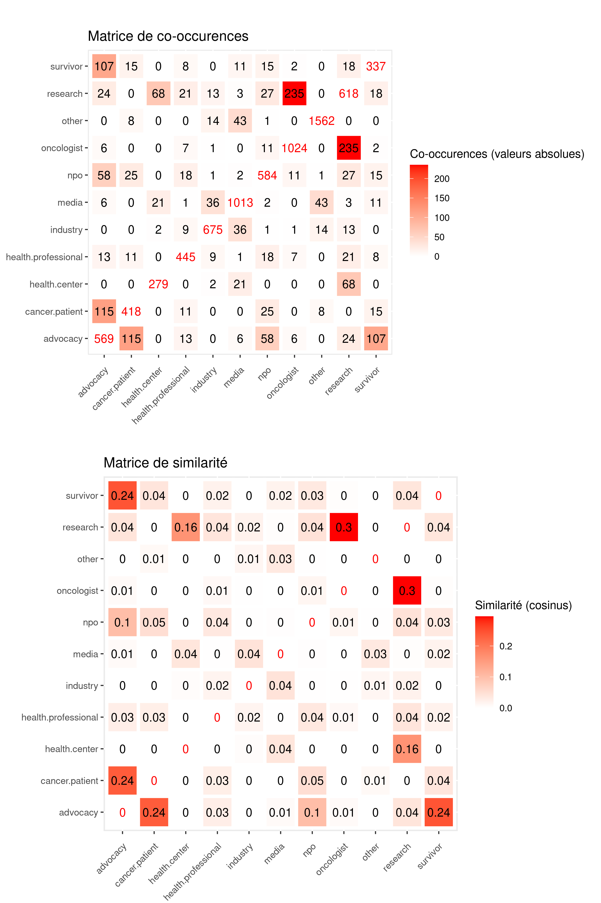

Regroupement des rôles
Regroupement des rôles#
S’agissant des rôles et suivant les suggestions de la réunion précédente, plusieurs niveaux de regroupements ont été expérimentés. J’ai d’abord distingué les rôles caractérisant essentiellement des “personnes” (advocacy, survivor, cancer patient, oncologist, health professional et research) de ceux définissant des “collectifs” (media, npo, industry, health center). Toutefois, comme on le verra plus loin, il existe des collectifs codés comme “patients” ou “oncologues” et, réciproquement, des “personnes” codées comme “media” ou “npo”.
Je me suis ensuite appuyer sur une analyse des “similarités” entre les rôles pour définir les rapprochements pertinent. Par “similarité”, j’entends le fait que 2 rôles ou plus sont associés à un même compte. Par exemple, on a 235 comptes qui ont été annoté à la fois comme oncologues (oncologist) et chercheur (research).
La figure X indique pour chaque couple de rôles le nombre d’individus qu’ils ont en commun (matrice de co-occurrence) et leur degré de similarité (matrice de similarité). On observe une certaine “similarité” entre les “défenseurs de cause” (advocacy), les “survivants” (survivor) et les “patients” (cancer patient) d’une part, les “chercheurs” (research) et “oncologues” (oncologist) d’autre part qui justifient leur rapprochement au sein d’une même catégorie. En revanche, on peut s’interroger sur l’intérêt de regrouper les “professionnels de santé” (health professional) avec les “oncologues” et les “chercheurs”, étant donnée leur faible similarité. De même, le faible nombre de chevauchements entre les rôles collectifs plaide pour que ces derniers continuent d’être distinguer.

Le travail de recodage a alors été divisé en plusieurs étapes afin de construire de nouvelles variables permettant d’attribuer chaque compte à une catégorie unique tout en conservant les rôles définis lors de l’annotation. De cette manière, il est possible ensuite de tester différents niveaux de regroupement.
Etape 1 : j’ai crée une première variable intutilée User_role. Elle comprend à la fois les rôles “purs”, c’est-à-dire les comptes jouant un seul rôle, et l’ensemble des associations de rôles observés existantes. Si un compte a uniquement été classé comme cancer patient, il conserve cette valeur. En revanche, si un compte est à la fois classé comme cancer patient et advocacy, alors il prendra la valeur Cancer patient & advocacy.
## Unique role
# Individuals
## Survivor
users.loc[((users["Somme_role"] == 1) &
(users["survivor"] == 1)), "User_role"]= "Survivor"
## Cancer patients
users.loc[((users["Somme_role"] == 1) &
(users["cancer patient"] == 1)), "User_role"]= "Cancer patient"
## Oncologists
users.loc[((users["Somme_role"] == 1) &
(users["oncologist"] == 1)) , "User_role"]= "Oncologist"
## Researcher
users.loc[((users["Somme_role"] == 1) &
(users["research"] == 1)), "User_role"]= "Researcher"
## Health professional
users.loc[((users["Somme_role"] == 1) &
(users["health professional"] == 1)), "User_role"]= "Health professional"
### Other
users.loc[((users["other"] == 1) &
(users["Somme_role"] == 1)), "User_role"]= "Other"
### Advocacy
users.loc[((users["advocacy"]==1) &
(users["Somme_role"] == 1)), "User_role"]= "Advocacy"
## Collective
### Health center
users.loc[((users["Somme_role"] == 1) &
(users["health center"] == 1)), "User_role"]= "Health center"
users.loc[((users["Somme_role"] == 1) &
(users["industry"] == 1)), "User_role"]= "Industry"
users.loc[((users["Somme_role"] == 1) &
(users["npo"] == 1)), "User_role"]= "NPO"
### Other
users.loc[((users["Somme_role"] == 1) &
(users["other"] == 1)), "User_role"]= "Other"
### Media
users.loc[((users["Somme_role"] == 1) &
(users["media"]==1)) , "User_role"]= "Media"
users.loc[users["Somme_role"] == 0, "User_role"]= "Undefined"
## Double roles
# Individuals
## Survivor
users.loc[(users["Somme_role"] == 2) &
((users["survivor"] == 1) &
(users["cancer patient"] == 1)), "User_role"]= "Survivor & cancer patient"
users.loc[(users["Somme_role"] == 2) &
((users["survivor"] == 1) &
(users["advocacy"] == 1)), "User_role"]= "Survivor & advocacy"
users.loc[(users["Somme_role"] == 2) &
((users["survivor"] == 1) &
(users["oncologist"] == 1)), "User_role"]= "Survivor & oncologist"
users.loc[(users["Somme_role"] == 2) &
((users["survivor"] == 1) &
(users["research"] == 1)), "User_role"]= "Survivor & research"
users.loc[(users["Somme_role"] == 2) &
((users["survivor"] == 1) &
(users["health professional"] == 1)), "User_role"]= "Survivor & health professional"
users.loc[(users["Somme_role"] == 2) &
((users["survivor"] == 1) &
(users["media"] == 1)), "User_role"]= "Survivor & media"
users.loc[(users["Somme_role"] == 2) &
((users["survivor"] == 1) &
(users["npo"] == 1)), "User_role"]= "Survivor & npo"
## Cancer patients
users.loc[(users["Somme_role"] == 2) &
((users["cancer patient"] == 1) &
(users["advocacy"] == 1)), "User_role"]= "Cancer patient & advocacy"
users.loc[(users["Somme_role"] == 2) &
((users["cancer patient"] == 1) &
(users["health professional"] == 1)), "User_role"]= "Cancer patient & health professional"
users.loc[(users["Somme_role"] == 2) &
((users["cancer patient"] == 1) &
(users["npo"] == 1)), "User_role"]= "Cancer patient & npo"
users.loc[(users["Somme_role"] == 2) &
((users["cancer patient"] == 1) &
(users["other"] == 1)), "User_role"]= "Cancer patient & other"
### Advocacy
users.loc[(users["Somme_role"] == 2) &
((users["advocacy"] == 1)&
(users["health professional"] == 1)), "User_role"]= "Advocacy & health professional"
users.loc[(users["Somme_role"] == 2) &
((users["advocacy"] == 1)&
(users["oncologist"] == 1)), "User_role"]= "Advocacy & oncologist"
users.loc[(users["Somme_role"] == 2) &
((users["advocacy"] == 1)&
(users["research"] == 1)), "User_role"]= "Advocacy & research"
users.loc[(users["Somme_role"] == 2) &
((users["advocacy"] == 1)&
(users["media"] == 1)), "User_role"]= "Advocacy & media"
users.loc[(users["Somme_role"] == 2) &
((users["advocacy"] == 1)&
(users["npo"] == 1)), "User_role"]= "Advocacy & npo"
## Oncologists
users.loc[(users["Somme_role"] == 2) &
((users["oncologist"] == 1)&
(users["health professional"] == 1)), "User_role"]= "Oncologist & health professional"
users.loc[(users["Somme_role"] == 2) &
((users["oncologist"] == 1)&
(users["research"] == 1)), "User_role"]= "Oncologist & research"
users.loc[(users["Somme_role"] == 2) &
((users["oncologist"] == 1)&
(users["industry"] == 1)), "User_role"]= "Oncologist & industry"
users.loc[(users["Somme_role"] == 2) &
((users["oncologist"] == 1)&
(users["npo"] == 1)), "User_role"]= "Oncologist & npo"
## Researcher
users.loc[(users["Somme_role"] == 2) &
((users["research"] == 1)&
(users["health professional"] == 1)), "User_role"]= "Research & health professional"
users.loc[(users["Somme_role"] == 2) &
((users["research"] == 1)&
(users["health center"] == 1)), "User_role"]= "Research & health center"
users.loc[(users["Somme_role"] == 2) &
((users["research"] == 1)&
(users["industry"] == 1)), "User_role"]= "Research & industry"
users.loc[(users["Somme_role"] == 2) &
((users["research"] == 1)&
(users["media"] == 1)), "User_role"]= "Research & media"
users.loc[(users["Somme_role"] == 2) &
((users["research"] == 1)&
(users["npo"] == 1)), "User_role"]= "Research & npo"
## Health professional
users.loc[(users["Somme_role"] == 2) &
((users["health professional"] == 1)&
(users["industry"] == 1)), "User_role"]= "Health professional & industry"
users.loc[(users["Somme_role"] == 2) &
((users["health professional"] == 1)&
(users["media"] == 1)), "User_role"]= "Health professional & media"
users.loc[(users["Somme_role"] == 2) &
((users["health professional"] == 1)&
(users["npo"] == 1)), "User_role"]= "Health professional & npo"
### Other
users.loc[(users["Somme_role"] == 2) &
((users["other"] == 1)&
(users["industry"] == 1)), "User_role"]= "Other & industry"
users.loc[(users["Somme_role"] == 2) &
((users["other"] == 1)&
(users["media"] == 1)), "User_role"]= "Other & media"
users.loc[(users["Somme_role"] == 2) &
((users["other"] == 1)&
(users["npo"] == 1)), "User_role"]= "Other & npo"
### Health center
users.loc[(users["Somme_role"] == 2) &
((users["health center"] == 1)&
(users["industry"] == 1)), "User_role"]= "Health center & industry"
users.loc[(users["Somme_role"] == 2) &
((users["health center"] == 1)&
(users["media"] == 1)), "User_role"]= "Health center & media"
### Industry
users.loc[(users["Somme_role"] == 2) &
((users["industry"] == 1)&
(users["media"] == 1)), "User_role"]= "Industry & media"
users.loc[(users["Somme_role"] == 2) &
((users["industry"] == 1)&
(users["npo"] == 1)), "User_role"]= "Industry & npo"
## Triple role
### Survivor & cancer patient & advocacy
users.loc[(users["Somme_role"] == 3) &
((users["survivor"] == 1) &
(users["cancer patient"] == 1)&
(users["advocacy"] == 1)), "User_role"]= "Survivor & cancer patient & advocacy"
### Survivor & cancer patient & npo
users.loc[(users["Somme_role"] == 3) &
((users["survivor"] == 1) &
(users["cancer patient"] == 1)&
(users["npo"] == 1)), "User_role"]= "Survivor & cancer patient & npo"
### Survivor & npo & media
users.loc[(users["Somme_role"] == 3) &
((users["survivor"] == 1) &
(users["media"] == 1)&
(users["npo"] == 1)), "User_role"]= "Survivor & npo & media"
### Survivor & research & advocacy
users.loc[(users["Somme_role"] == 3) &
((users["survivor"] == 1) &
(users["research"] == 1)&
(users["advocacy"] == 1)), "User_role"]= "Survivor & research & advocacy"
### Survivor & research & health professional
users.loc[(users["Somme_role"] == 3) &
((users["survivor"] == 1) &
(users["research"] == 1)&
(users["health professional"] == 1)), "User_role"]= "Survivor & research & health professional"
### Survivor & research & advocacy professional
users.loc[(users["Somme_role"] == 3) &
((users["survivor"] == 1) &
(users["advocacy"] == 1)&
(users["health professional"] == 1)), "User_role"]= "Survivor & research & health professional"
### Survivor & media & advocacy
users.loc[(users["Somme_role"] == 3) &
((users["survivor"] == 1) &
(users["media"] == 1)&
(users["advocacy"] == 1)), "User_role"]= "Survivor & media & advocacy"
### Cancer patient & npo & advocacy
users.loc[(users["Somme_role"] == 3) &
((users["cancer patient"] == 1) &
(users["npo"] == 1)&
(users["advocacy"] == 1)), "User_role"]= "Cancer patient & npo & advocacy"
### Oncologist & research & advocacy
users.loc[(users["Somme_role"] == 3) &
((users["oncologist"] == 1)&
(users["research"] == 1)&
(users["advocacy"] == 1)), "User_role"]= "Oncologist & research & advocacy"
### Oncologist & research & advocacy
users.loc[(users["Somme_role"] == 3) &
((users["oncologist"] == 1)&
(users["research"] == 1)&
(users["health professional"] == 1)), "User_role"]= "Oncologist & research & health professional"
### Oncologist & research & industry
users.loc[(users["Somme_role"] == 3) &
((users["oncologist"] == 1)&
(users["research"] == 1)&
(users["industry"] == 1)), "User_role"]= "Oncologist & research & industry"
### Oncologist & research & npo
users.loc[(users["Somme_role"] == 3) &
((users["oncologist"] == 1)&
(users["research"] == 1)&
(users["npo"] == 1)), "User_role"]= "Oncologist & research & npo"
### Health professional & npo & advocacy
users.loc[(users["Somme_role"] == 3) &
((users["advocacy"] == 1)&
(users["health professional"] == 1)&
(users["npo"] == 1)), "User_role"]= "Health professional & npo & advocacy"
### Research & npo & advocacy
users.loc[(users["Somme_role"] == 3) &
((users["research"] == 1)&
(users["advocacy"] == 1)&
(users["npo"] == 1)), "User_role"]= "Research & npo & advocacy"
### Research & health professional & advocacy
users.loc[(users["Somme_role"] == 3) &
((users["research"] == 1)&
(users["health professional"] == 1)&
(users["advocacy"] == 1)), "User_role"]= "Research & health professional & advocacy"
### Media & npo & other
users.loc[(users["Somme_role"] == 3) &
((users["media"] == 1)&
(users["npo"] == 1)&
(users["other"] == 1)), "User_role"]= "Media & npo & other"
## Quadruple role
### Survivor & cancer patient & advocacy & npo
users.loc[(users["Somme_role"] == 4) &
((users["survivor"] == 1) &
(users["cancer patient"] == 1)&
(users["advocacy"] == 1)&
(users["npo"] == 1)), "User_role"]= "Survivor & cancer patient & advocacy & npo"
Etape 2 : les modalités de la variable User_role sont regroupées à l’aide d’une nouvelle variable appelée User_role2. Il s’agit ici d’opérer une première réduction des rôles. J’ai fait par exemple le choix de regrouper toutes les modalités contenant le terme “survivor” dans une méta-catégorie appelée Survivor (avec S majuscule). De même toutes les modalités contenant le terme “cancer patient” dans la méta-catégorie Cancer patient, sauf celles contenant aussi le terme “survivor”.
users["User_role2"] = users["User_role"]
# individuals
## Survivor
users.loc[(users['User_type'].isin(['Person'])) &
(users['User_role'].str.contains('survivor', case = False)), "User_role2"] = "Survivor"
## Cancer patients
users.loc[(users['User_type'].isin(['Person'])) &
((users['User_role'].str.contains('cancer', case = False)) &
(users['survivor'] == 0)), "User_role2"] = "Cancer patient"
## Oncologists
users.loc[(users['User_type'].isin(['Person'])) &
(users['User_role'].str.contains('oncologist', case = False)&
(users['survivor'] == 0)&
(users['cancer patient'] == 0)), "User_role2"] = "Oncologist"
## Researchers
users.loc[(users['User_type'].isin(['Person'])) &
((users['User_role'].str.contains('research', case = False)) &
(users['oncologist'] == 0)&
(users['survivor'] == 0)&
(users['cancer patient'] == 0)), "User_role2"] = "Researcher"
## Health professionnals
users.loc[(users['User_type'].isin(['Person'])) &
((users['User_role'].str.contains('health', case = False)) &
(users['oncologist'] == 0) &
(users['research'] == 0) &
(users['survivor'] == 0)&
(users['cancer patient'] == 0)), "User_role2"] = "Health professional"
## Advocacy
users.loc[(users['User_type'].isin(['Person'])) &
((users['User_role'].str.contains('advocacy', case = False)) &
(users['oncologist'] == 0) &
(users['research'] == 0) &
(users['survivor'] == 0)&
(users['cancer patient'] == 0)&
(users['health professional'] == 0)), "User_role2"] = "Advocacy"
## Other
users.loc[(users['User_type'].isin(['Person'])) &
((users['User_role'].str.contains('other', case = False)) &
(users['oncologist'] == 0) &
(users['research'] == 0) &
(users['survivor'] == 0)&
(users['cancer patient'] == 0)&
(users['health professional'] == 0)&
(users['advocacy'] == 0)), "User_role2"] = "Other"
## Medias
users.loc[(users['User_type'].isin(['Person'])) &
((users['User_role'].str.contains('media', case = False)) &
(users['oncologist'] == 0) &
(users['research'] == 0) &
(users['survivor'] == 0)&
(users['cancer patient'] == 0)&
(users['health professional'] == 0)&
(users['advocacy'] == 0)&
(users['other'] == 0)), "User_role2"] = "Media"
# collective
## media
## Advocacy
users.loc[(users['User_type'].isin(['Collective'])) &
((users['User_role'].str.contains('research', case = False))&
(users['advocacy'] == 1) ), "User_role2"] = "Researcher"
users.loc[(users['User_type'].isin(['Collective'])) &
(users['User_role'].str.contains('cancer', case = False)), "User_role2"] = "Cancer patient"
users.loc[(users['User_type'].isin(['Collective'])) &
(users['User_role'].str.contains('survivor', case = False)), "User_role2"] = "Survivor"
users.loc[(users['User_type'].isin(['Collective'])) &
(users['User_role'].str.contains('media', case = False))&
(users['health center'] == 0), "User_role2"] = "Media"
users.loc[(users['User_type'].isin(['Collective'])) &
(users['User_role'].str.contains('npo', case = False))&
(users['media'] == 0)&
(users['industry'] == 0), "User_role2"] = "NPO"
users.loc[(users['User_type'].isin(['Collective'])) &
(users['User_role'].str.contains('advocacy', case = False))&
(users['media'] == 0) &
(users['research'] == 0) &
(users['cancer patient'] == 0) &
(users['survivor'] == 0) &
(users['npo'] == 0), "User_role2"] = "Advocacy"
users.loc[(users['User_type'].isin(['Collective'])) &
(users['User_role'].str.contains('health center', case = False))&
(users['npo'] == 0) &
(users['industry'] == 0), "User_role2"] = "Health center"
users.loc[(users['User_type'].isin(['Collective'])) &
(users['User_role'].str.contains('industry', case = False))&
(users['media'] == 0), "User_role2"] = "Industry"
Etape 3 : La variable User_status réunit à son tour les modalités de la variable User_role2. Dans cette dernière variable, les modalités Cancer patient et Survivor sont réunies au sein de la catégorie générale Patients. Tandis que la catégorie Health professionals rassemblent les “oncologues”, les “professionnels de santé” et les “chercheurs”. En ce qui concerne les collectifs, j’ai regroupés les “centres de santé” et les “industries” dans une catégorie appelée “Health organisations”. J’ai par ailleurs fait le choix de conserver une catégorie “média” et “NPO” dès lors que le comptes n’appartiennent pas à la classe des “industries” et des “centres de santé”.
#Individuals
## Patients
users["User_status"] = users["User_role2"]
users.loc[(users["User_role2"] == "Cancer patient") |
(users["User_role2"] == "Survivor"), "User_status" ]= "Patients"
# Professionals
users.loc[(users["User_role2"] == "Oncologist") |
(users["User_role2"] == "Researcher") |
(users["User_role2"] == "Health professional"), "User_status" ]= "Health professionals"
users.loc[(users["User_role2"] == "Health center") |
(users["User_role2"] == "Industry") , "User_status" ]= "Health organisations"
User_type User_status User_role2 User_role
Collective Advocacy Advocacy Advocacy 62
Health organisations Health center Health center 188
Health center & media 21
Research & health center 68
Industry Health center & industry 2
Industry 488
Industry & npo 1
Other & industry 3
Research & industry 8
Health professionals Health professional Health professional 29
Oncologist Oncologist 5
Researcher Advocacy & research 1
Researcher 63
Media Media Advocacy & media 3
Industry & media 33
Media 806
Media & npo & other 1
Other & media 20
Research & media 2
Survivor & media 6
Survivor & npo & media 1
NPO NPO Advocacy & npo 49
Cancer patient & npo 14
Cancer patient & npo & advocacy 2
Health professional & npo 13
Health professional & npo & advocacy 2
NPO 419
Oncologist & npo 8
Oncologist & research & npo 1
Research & npo 22
Research & npo & advocacy 2
Survivor & cancer patient & advocacy & npo 1
Survivor & cancer patient & npo 4
Survivor & npo 5
Other Other Other 425
Patients Cancer patient Cancer patient 1
Cancer patient & advocacy 2
Survivor Survivor 3
Survivor & advocacy 1
Undefined Undefined Undefined 234
Person Advocacy Advocacy Advocacy 200
Advocacy & media 2
Advocacy & npo 1
Health organisations Industry Industry 112
Health professionals Health professional Advocacy & health professional 10
Health professional 333
Health professional & industry 9
Health professional & media 1
Health professional & npo 3
Oncologist Advocacy & oncologist 3
Oncologist 763
Oncologist & health professional 6
Oncologist & npo 2
Oncologist & research 229
Oncologist & research & advocacy 3
Oncologist & research & health professional 1
Oncologist & research & industry 1
Researcher Advocacy & research 12
Research & health professional 19
Research & industry 4
Research & media 1
Research & npo 2
Researcher 161
Media Media Industry & media 3
Media 87
NPO NPO NPO 24
Other Other Other 1054
Other & industry 11
Other & media 22
Patients Cancer patient Cancer patient 255
Cancer patient & advocacy 107
Cancer patient & health professional 11
Cancer patient & npo 2
Cancer patient & npo & advocacy 1
Cancer patient & other 8
Survivor Survivor 177
Survivor & advocacy 95
Survivor & cancer patient 7
Survivor & cancer patient & advocacy 2
Survivor & cancer patient & npo 1
Survivor & health professional 6
Survivor & media 3
Survivor & media & advocacy 1
Survivor & npo 3
Survivor & oncologist 2
Survivor & research 11
Survivor & research & advocacy 6
Survivor & research & health professional 2
Undefined Undefined Undefined 280
dtype: int64